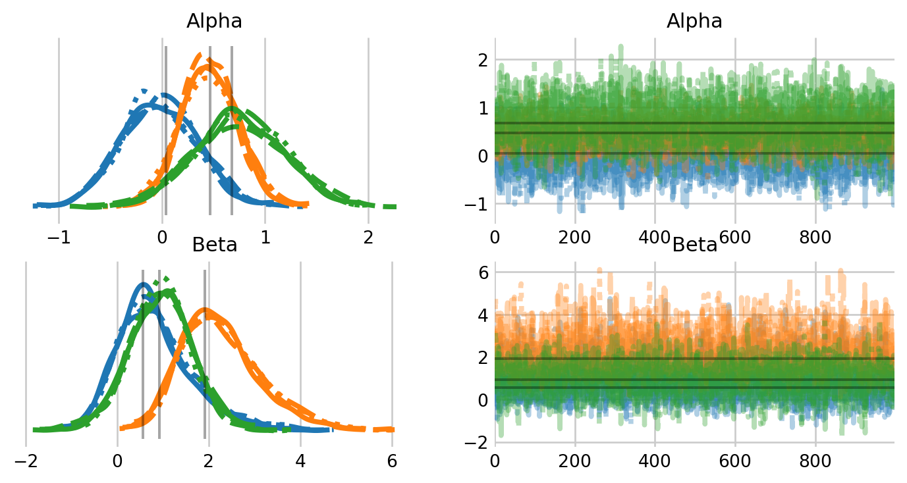
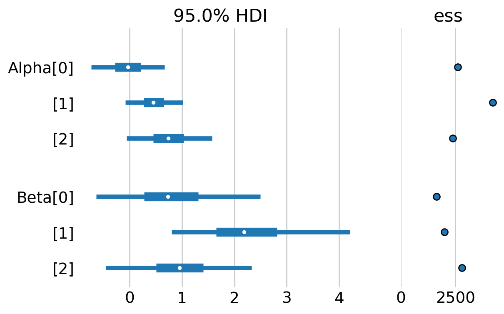
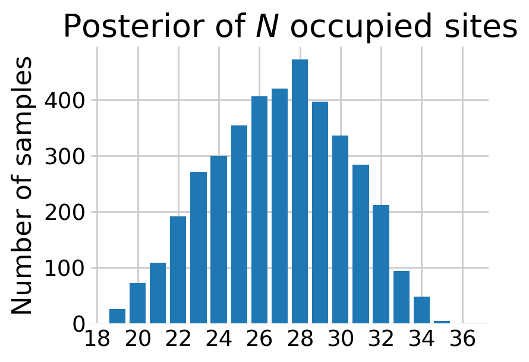

from jax import random
from jax.scipy.special import expit
from numpyro.infer import NUTS, MCMC
import arviz as az
import jax.numpy as jnp
import matplotlib.pyplot as plt
import numpy as np
import numpyro
import numpyro.distributions as dist
import pandas as pd
import seaborn as sns
# plotting defaults
plt.style.use('fivethirtyeight')
plt.rcParams['axes.facecolor'] = 'white'
plt.rcParams['figure.facecolor'] = 'white'
plt.rcParams['axes.spines.left'] = False
plt.rcParams['axes.spines.right'] = False
plt.rcParams['axes.spines.top'] = False
plt.rcParams['axes.spines.bottom'] = False
sns.set_palette("tab10")
# hyperparameters
RANDOM_SEED = 17
def scale(x):
'''Scale x: 0 is the mean and 1 is one standard deviation from the mean.'''
return (x - np.nanmean(x)) / np.nanstd(x)
def get_warbler_data():
# read in the data
data = pd.read_csv('PlosOne-DataFinnmark.csv')
# subset the data to select willow warbler
is_warbler = data.Species == "Willow Warbler"
Y = data.loc[is_warbler, ['Y05.1', 'Y05.2', 'Y05.3']].to_numpy()
n, J = Y.shape
# generate site covariate matrix
site_intercept = np.ones(n)
pland = scale(data.loc[is_warbler, 'Pland']).to_numpy()
wheight = scale(data.loc[is_warbler, 'wheight']).to_numpy()
X = np.c_[site_intercept, pland, wheight]
# generate visit covariate array
visit_int = np.ones_like(Y)
visit_wheight = np.repeat(wheight, repeats=J).reshape(n, J)
# indicates which visit this is [0, 1, 2, 0, ...]
_, visit_indicator = np.indices(Y.shape)
visit_indicator = scale(visit_indicator)
W = np.stack((visit_int, visit_indicator, visit_wheight), axis=2)
return {
'detection_data': Y,
'site_covariates': X,
'visit_covariates': W
}Introduction to NumPyro
Demonstrating core features by site occupancy
Before I forced myself to learn it, I found the NumPyro syntax utterly beguiling. In this notebook, I hope to introduce the library in a way that I would have found helpful. Hopefully this will be helpful for you too.
As a motivating example, I will use the same occupancy dataset from the PyMC occupancy notebook. These data come from Henden et al. (2013), and were used as a demonstration in Hooten and Hefley (2019), Chapter 23. They represent detection/non-detection data of Willow Warblers from Finnmark, Norway. The \(J=27\) sites were sampled \(K=3\) times. Replicating the analysis in Box 23.7 in Hooten and Hefley (2019), I use two covariates for site: site area (Pland) and willow tree height (wheight). Further, I use two covariates for visit: an indicator for the visit and willow tree height.
Our observations are a matrix of of binary detection data, \(\mathbf{Y}\), where the \(y_{i,j}=1\) if a warbler was detected at site \(i\) during survey \(j\), and \(\mathbf{Y}\) has shape \((J, K)\). We encode our site level covariates as a matrix \(\mathbf{X},\) with shape \((J, 3),\) where each row contains a 1 for the intercept, and the values for pland and wheight at that site. We model the effects of these covariates on the probability that each site is occupied with \(z_{i} \sim \text{Bern}(\psi)\) where \(\psi = \text{expit}(\mathbf{X}\beta)\). We assume that warblers can only be detected at occupied sites with probability \(p_{ij}\). As such, we model each observation as \(y_{i,j} \sim \text{Bern}(z_i p_{i,j})\). We encode visit-level covariates was an array \(\mathbf{W}\) with shape \((J, K, 3)\), where the last dimension contains a 1 for the intercept, an integer value indicating which visit this is, and the wheight value at that site. We model the effect of these covariates on the probability of detection with \(\mathbf{P}=\text{expit}(\mathbf{W}\alpha)\).
Defining the model
We define our NumPyro model as a Python function. Let’s look at one of these functions: an occupancy model with site and visit covariates.
def occupancy_model(data_dictionary):
detection_data = data_dictionary['detection_data']
site_count, visit_count = detection_data.shape
# site-level linear model
# three beta effects in linear model, each getting its own Normal(0, 2) prior
with numpyro.plate('site-effects', 3):
beta = numpyro.sample('Beta', dist.Normal(0, 2))
# we will always use jax.numpy (jnp) for numpy like operations
site_covs = data_dictionary['site_covariates']
logit_psi = jnp.dot(site_covs, beta)
# jax.scipy contains scipy like operations, like jax.scipy.special.expit()
psi = numpyro.deterministic('psi', expit(logit_psi))
# visit level linear model
# three alpha effects in linear model, each getting its own Normal(0, 2) prior
with numpyro.plate('visit-effects', 3):
alpha = numpyro.sample('Alpha', dist.Normal(0, 2))
# linear model for the detection probability
visit_covs = data_dictionary['visit_covariates']
logit_p = jnp.dot(visit_covs, alpha)
p = numpyro.deterministic('p', expit(logit_p))
# here we let numpyro know that there will be site_count binary z states
with numpyro.plate('sites', site_count):
# the vector of z states will be bernoulli distributed with parameter psi
z = numpyro.sample(
'z',
dist.Bernoulli(psi),
infer={'enumerate': 'parallel'} # this is where we marginalize!
)
# NumPyro is finnicky with shapes, especially with enumeration
# this helps ensure that the site dimensions are facing each other
mu_y = z * p.T
# encode the likelihood by adding obs (transposed to match above)
with numpyro.plate('visits', visit_count):
numpyro.sample("y", dist.Bernoulli(mu_y), obs=detection_data.T)There are two NumPyro functions that are called repeatedly in the occupancy_model function: numpyro.sample and numpyro.plate. The numpyro.plate function can be thought of as a vectorized loop over conditionally independent dimensions. For example, each one of our site-effects, that is, the \(\beta\) values in the linear model for \(\psi\), is independent conditional on the hyperparameters \(\mu=0\) and \(\sigma=2\). In JAGS, we might write this code as:
for (i in 1:3){
beta[i] ~ dnorm(0, 0.5)
}In NumPyro, we can write this as,
with numpyro.plate('site-effects', 3):
beta = numpyro.sample('beta', dist.Normal(0, 2))which creates a vector of beta effects for our linear model.
The numpyro.sample sample function is how we define random variables. The first argument is the name, i.e., how we’ll access the variable later. The second argument is the actual distribution we’re assigning to the random variable. These distribution functions reside in NumPyro’s distributions module. This syntax should be familiar with PyMC users. In PyMC, the above statement would be beta = pm.Normal('beta', 0, 2, dims='site-effects').
The obs argument in numpyro.sample defines whether each random variable is observed. In the occupancy model, the unobserved random variables include the priors for the coefficients in the linear model, \(\alpha\) and \(\beta\), as well as the discrete latent variable \(\mathbf{z}\). Recall that \(\mathbf{z}\) is a vector of length site_count because it within the plate for sites. The one observed random variable is \(\mathbf{Y}\). As such, the distribution for \(\mathbf{Y}\) encodes the likelihood. Since \(\mathbf{Y}\) is two dimensional, we include another plate for the visits.
You might notice that the function occupancy_model() lacks a return statement, which can look a bit odd. That’s because NumPyro registers random variables in the function to a handler, such as an MCMC sampler. This gives the language and syntax flexibility to exchange handlers and models.
Automated marginalization
The distribution for the latent occupancy state, \(\mathbf{z},\) looks slightly different than the others because it includes the additional argument, infer={'enumerate': 'parallel'}. This tells NumPyro to marginalize this discrete latent variable. To do so, NumPyro enumerates the possible outcomes for this variable. At sites where the species was never detected, the possible outcomes are that the species is not truly present, or that it is truly present and just never detected. As such, the model enumerates these outcomes as:
\[ P(\mathbf{y}_j)= \begin{cases} P(\mathbf{y}_j | z_j = 1)\; \psi_j \; + \; (1 - \psi_j), & \text{if } \mathbf{y}_j = \mathbf{0}\\ P(\mathbf{y}_j | z_j = 1)\; \psi_j, & \text{otherwise} \end{cases} \]
Inference
Inference is fairly straightforward in NumPyro, although more verbose than PyMC. First, we define which sampler we would like to use on our model. We input this kernel into the MCMC initializer, specifying the configuration (chains, draws, tune, etc.). Finally, we run the MCMC algorithm.
warbler_data = get_warbler_data()
rng_key = random.PRNGKey(RANDOM_SEED)
# specify which sampler you want to use
nuts_kernel = NUTS(occupancy_model)
# configure the MCMC run
mcmc = MCMC(nuts_kernel, num_warmup=500, num_samples=1000, num_chains=4)
# run the MCMC then inspect the output
mcmc.run(rng_key, warbler_data)
mcmc.print_summary()/var/folders/7b/nb0vyhy90mdf30_65xwqzl300000gn/T/ipykernel_71858/1360101409.py:8: UserWarning: There are not enough devices to run parallel chains: expected 4 but got 1. Chains will be drawn sequentially. If you are running MCMC in CPU, consider using `numpyro.set_host_device_count(4)` at the beginning of your program. You can double-check how many devices are available in your system using `jax.local_device_count()`.
mcmc = MCMC(nuts_kernel, num_warmup=500, num_samples=1000, num_chains=4)
0%| | 0/1500 [00:00<?, ?it/s]warmup: 0%| | 1/1500 [00:00<18:45, 1.33it/s, 3 steps of size 2.34e+00. acc. prob=0.00]warmup: 22%|██▏ | 337/1500 [00:00<00:02, 538.09it/s, 7 steps of size 7.45e-01. acc. prob=0.79]sample: 48%|████▊ | 721/1500 [00:00<00:00, 1151.58it/s, 3 steps of size 5.37e-01. acc. prob=0.89]sample: 74%|███████▎ | 1104/1500 [00:01<00:00, 1713.27it/s, 7 steps of size 5.37e-01. acc. prob=0.89]sample: 99%|█████████▉| 1492/1500 [00:01<00:00, 2212.74it/s, 7 steps of size 5.37e-01. acc. prob=0.89]sample: 100%|██████████| 1500/1500 [00:01<00:00, 1299.91it/s, 15 steps of size 5.37e-01. acc. prob=0.89]
0%| | 0/1500 [00:00<?, ?it/s]warmup: 0%| | 1/1500 [00:00<18:08, 1.38it/s, 1 steps of size 2.34e+00. acc. prob=0.00]warmup: 24%|██▎ | 356/1500 [00:00<00:01, 584.57it/s, 15 steps of size 4.36e-01. acc. prob=0.79]sample: 49%|████▊ | 728/1500 [00:00<00:00, 1180.25it/s, 7 steps of size 5.36e-01. acc. prob=0.89]sample: 74%|███████▍ | 1113/1500 [00:01<00:00, 1749.52it/s, 7 steps of size 5.36e-01. acc. prob=0.89]sample: 99%|█████████▉| 1489/1500 [00:01<00:00, 2219.09it/s, 7 steps of size 5.36e-01. acc. prob=0.89]sample: 100%|██████████| 1500/1500 [00:01<00:00, 1327.02it/s, 7 steps of size 5.36e-01. acc. prob=0.89]
0%| | 0/1500 [00:00<?, ?it/s]warmup: 0%| | 1/1500 [00:00<19:09, 1.30it/s, 1 steps of size 2.34e+00. acc. prob=0.00]warmup: 23%|██▎ | 341/1500 [00:00<00:02, 534.76it/s, 7 steps of size 8.72e-01. acc. prob=0.79]sample: 48%|████▊ | 725/1500 [00:00<00:00, 1139.73it/s, 7 steps of size 5.21e-01. acc. prob=0.91]sample: 74%|███████▍ | 1111/1500 [00:01<00:00, 1703.67it/s, 7 steps of size 5.21e-01. acc. prob=0.91]sample: 100%|█████████▉| 1497/1500 [00:01<00:00, 2196.02it/s, 7 steps of size 5.21e-01. acc. prob=0.91]sample: 100%|██████████| 1500/1500 [00:01<00:00, 1283.28it/s, 7 steps of size 5.21e-01. acc. prob=0.91]
0%| | 0/1500 [00:00<?, ?it/s]warmup: 0%| | 1/1500 [00:00<21:43, 1.15it/s, 3 steps of size 2.34e+00. acc. prob=0.00]warmup: 21%|██ | 309/1500 [00:00<00:02, 435.44it/s, 7 steps of size 6.18e-01. acc. prob=0.78]sample: 44%|████▎ | 655/1500 [00:01<00:00, 942.51it/s, 7 steps of size 4.75e-01. acc. prob=0.91]sample: 68%|██████▊ | 1016/1500 [00:01<00:00, 1457.46it/s, 7 steps of size 4.75e-01. acc. prob=0.91]sample: 92%|█████████▏| 1374/1500 [00:01<00:00, 1915.67it/s, 15 steps of size 4.75e-01. acc. prob=0.91]sample: 100%|██████████| 1500/1500 [00:01<00:00, 1145.93it/s, 7 steps of size 4.75e-01. acc. prob=0.91]
mean std median 5.0% 95.0% n_eff r_hat
Alpha[0] -0.02 0.36 -0.03 -0.59 0.60 2611.96 1.00
Alpha[1] 0.46 0.28 0.45 0.01 0.92 4208.11 1.00
Alpha[2] 0.74 0.42 0.74 0.01 1.41 2382.93 1.00
Beta[0] 0.84 0.82 0.73 -0.46 2.13 1644.14 1.00
Beta[1] 2.29 0.89 2.19 0.86 3.67 2001.76 1.00
Beta[2] 0.95 0.71 0.95 -0.15 2.17 2794.11 1.00
Number of divergences: 0Just like in PyMC, we will rely on the arviz package for visualization of the MCMC samples. The only difference is that we will need to initialize the InferenceData object with az.from_dict().
samples = mcmc.get_samples(group_by_chain=True)
warbler_idata = az.from_dict(samples)
alpha_hat_hooten = [0.04, 0.47, 0.68]
beta_hat_hooten = [0.56, 1.92, 0.93]
az.plot_trace(
warbler_idata,
figsize=(8,4),
var_names=['Alpha', 'Beta'],
lines=[("Alpha", {}, [alpha_hat_hooten]),
("Beta", {}, [beta_hat_hooten])]
);

az.plot_forest(warbler_idata, var_names=['Alpha', "Beta"],
figsize=(6,4),
hdi_prob=0.95, ess=True, combined=True);

As we can see, we get virtually the same estimates as the PyMC occupancy notebook.
Prediction
We can recover the latent states in the model by computing the probability that warblers occupy the site given that one was never detected, \[ \Pr(z_i = 1 | \mathbf{y}_j=\mathbf{0}) = \frac{ \prod_{j=1}^{K} (1 - p_{ij}) * \psi_i }{ \prod_{j=1}^{K} (1 - p_{ij}) * \psi_i + (1 - \psi_i) } \]
for all \(i\) where warblers were never detected.
def sim_N(data, samples):
'''Simulate the number of occupied sites'''
# later we'll filter to just the sites without a detection
was_detected = data['detection_data'].sum(axis=1) == 0
n = was_detected.sum()
_, visit_count = data['detection_data'].shape
rng = np.random.default_rng(RANDOM_SEED)
# extract the relevant samples
psi_undet = samples['psi'][:, ~was_detected]
p_undet = samples['p'][:, ~was_detected, :]
# computing Pr(z_i = 0 | y_{j,.} = 0)
# that is, probability that the species was never detected given occupancy
bin_prod = (1 - p_undet).prod(axis=2)
pi = (bin_prod * psi_undet) / (bin_prod * psi_undet + (1 - psi_undet))
# sample the number of sites without a detection
number_undetected = rng.binomial(1, pi).sum(axis=1)
# add in the number of sites with a detection
N_samps = n + number_undetected
return N_samps
samples = mcmc.get_samples()
N_samples = sim_N(warbler_data, samples)
# bar plot looks a little better than a histogram here imo
fig, ax = plt.subplots(figsize=(4,3))
N_values, N_counts = np.unique(N_samples, return_counts=True)
ax.bar(N_values, N_counts)
ax.set_ylabel('Number of samples')
ax.set_title('Posterior of $N$ occupied sites')
# this ensures the x axis labels are only integers
from matplotlib.ticker import MaxNLocator
ax.xaxis.set_major_locator(MaxNLocator(integer=True))
plt.show()

Conclusion
In this notebook, we covered the basic NumPyro syntax using a simple occupancy model as an example. We learned that numpyro.plate can generate a vector (or an array) of random varaibles, making it easy to vectorize operations within our model. We learned that we generate the random variables themselves with numpyro.sample, which requires us to specify a distribution from the numpyro.distributions module. Finally, we learned that we can marginalize out discrete latent states with the infer={'enumerate': 'parallel'} argument to numpyro.sample. In the following notebooks, we will introduce how we can marginalize out discrete latent states in Hidden Markov Models.
References
Henden, John-André, Nigel G Yoccoz, Rolf A Ims, and Knut Langeland. 2013. “How Spatial Variation in Areal Extent and Configuration of Labile Vegetation States Affect the Riparian Bird Community in Arctic Tundra.” PLoS One 8 (5): e63312.
Hooten, Mevin B, and Trevor Hefley. 2019. Bringing Bayesian Models to Life. CRC Press.